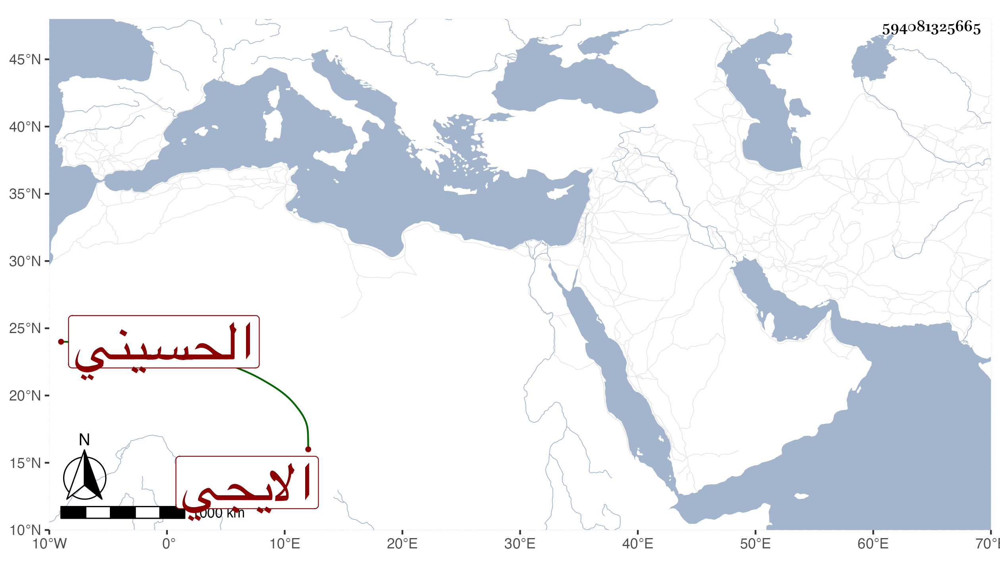

0902Sakhawi.DawLamic.ITO20230111-ara1.EIS1600.594081325665
Biography ID: 594081325665
444
عابدة ابنة السيد جلال الدين عبد الله بن قطب الدين محمد بن المحب عبيد الله بن نور الدين محمد الحسيني الايجي سبطة السيد صفي الدين ، أمها حليمة تزوجها ابن خالها السيد علي بن معين الدين فاستولدها ثم فارقها وتزوجت بالشريف رميثة بن بركات بن حسن بن عجلان ثم فارقها وهي الآن في كنف خالها السيد أحمد بن صفي الدين وغيره كوالدتها متأخرة في الخير عن أقاربها .
